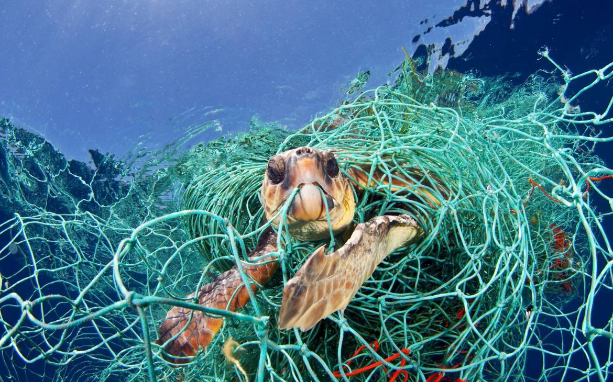

Die Auswirkungen des Klimawandels auf die Meere verdeutlichen die
Notwendigkeit von generellen Klimaschutzmaßnahmen: Vorrangig muss die
Konzentration von Treibhausgasen in der Atmosphäre begrenzt werden, um
den Klimawandel zu verlangsamen und seine Auswirkungen in Schranken zu
halten.
Für die Meere kommt es dabei vor allem darauf an, dass die Staaten den
Anstieg der weltweiten Mitteltemperatur unter 1,5 Grad Celsius
begrenzen, wie im Paris-Übereinkommen vereinbart.
Ein zweiter Handlungsbereich ist, die Widerstandsfähigkeit der
Meeresökosysteme zu stärken, denn manche Folgen des Klimawandels sind
schon heute nicht mehr zu vermeiden.
Generell können sich auch Meereslebewesen über lange Zeiträume an
Veränderungen in ihren Lebensräumen anpassen.
Entscheidend ist, ob sich die Arten schnell genug an die unvermeidlichen
Klimaveränderungen anpassen können.
Das bedeutet, dass die Meere noch besser als bisher geschützt werden
müssen, zum Beispiel vor überhöhten Nährstoffeinträgen – unter anderem
aus der Landwirtschaft – sowie vor Schadstoffen, aber auch dem Eintrag
von Müll.

Denn der Klimawandel ist einer von mehreren Stressfaktoren für die
Meere.
Die Ökosysteme sind bereits unter anderem durch Überfischung,
Überdüngung, Verschmutzung und die Zerstörung von Lebensräumen unter
Druck.
Dass sich Ökosysteme an Veränderungen anpassen, kann nur gelingen, wenn
sie insgesamt intakt und stabil bleiben.
Oft wird dabei der Begriff der Widerstandsfähigkeit oder Resilienz
verwendet.
Die Umweltpolitik in Deutschland und auf EU-Ebene hat sich zum Ziel
gesetzt, einen guten ökologischen Zustand für die europäischen Meere zu
erreichen und die biologische Vielfalt zu schützen und erhalten.
Das sieht unter anderem die Europäische Meeresstrategie-Rahmenrichtlinie
(MSRL) aus dem Jahr 2008 vor, die zur Zielerreichung das Jahr 2020
vorgibt.
Demnach sollen unter anderem schädliche Auswirkungen durch Nähr- und
Schadstoffeinträge, aber auch Lärm und Müll reduziert werden.
Zudem haben sich die Mitgliedsländer der EU in Form der sogenannten
Gemeinsamen Fischereipolitik zum Ziel gesetzt, die Fischerei
nachhaltiger zu gestalten, um die Fischbestände und die Meeresökosysteme
langfristig zu erhalten und die negativen Auswirkungen der Fischerei auf
die Meeresökosysteme auf ein Mindestmaß zu reduzieren.
Auch Meeresschutzgebiete leisten einen wichtigen Beitrag, die
Widerstandsfähigkeit der marinen Ökosysteme zu erhöhen, indem sie vor
allem menschliche Aktivitäten, die negative Auswirkungen haben,
ausschließen oder aber auf ein nachhaltiges Maß begrenzen.
So ermöglichen sie den Ökosystemen eine natürliche Entwicklung und
Regeneration.
Deutschland hat dafür auf Grundlage der europäischen
Fauna-Flora-Habitat-Richtlinie (FFH-RL) sowohl im Bereich des
Weltnaturerbes Wattenmeer als auch in deutschen Gewässern jenseits der
Zwölf-Seemeilenzone Schutzgebiete als Bestandteil des europäischen
Natura-2000-Netzes ausgewiesen und Regelungen zu ihrem Schutz
getroffen.